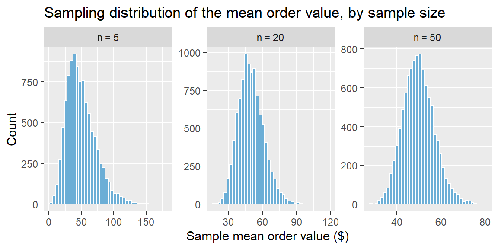

9Week 4: Sampling Distributions and the Sample Mean
9.1 Why This Matters
Every distribution we studied last (binomial, uniform, normal) described how an individual observation behaves: one customer’s transaction, one bag’s fill weight. But the decisions we actually make in business almost never rest on a single observation; they rest on a statistic computed from a sample: an average order value, a conversion rate, a mean delivery time. To know how much to trust that statistic, we need to understand how it would behave if we repeated the sampling process over and over. That’s the idea of a sampling distribution, and it’s the bridge that connects everything we’ve done so far to confidence intervals and hypothesis tests, starting next week.
9.2 Three Distributions You Will Encounter
It’s easy to blur together three related but distinct ideas. We’ll use one running example throughout, an online retailer trying to understand order values, to keep them straight.
The data distribution is the distribution of the values you actually observed in one sample. If the retailer pulls 40 recent orders and plots a histogram of those 40 order values, that histogram is the data distribution. It’s empirical, and it changes every time you pull a new sample.
The probability distribution is a theoretical model for how an individual order value behaves across the entire population of orders. It’s an assumption about the data-generating process, for instance, order values might be modeled as right-skewed, since most orders are modest but a few are very large.
The sampling distribution is the distribution of a statistic, say, the sample mean order value, computed across every possible sample of a fixed size \(n\). It’s also theoretical (we never actually collect every possible sample), but it answers the question that matters for inference: how much would this statistic vary if we repeated the study many times?
ExampleExample 4.1: Three distributions, one retailer
Suppose the true (unknown) average order value across all of an online retailer’s customers is \(\mu = \$68\), with individual order values following a right-skewed probability distribution; most orders are under $50, but a handful run into the hundreds.
The retailer pulls a random sample of 40 recent orders and computes their average: \(\bar{x} = \$71.20\). A histogram of those 40 specific order values is the data distribution. It reflects exactly this one sample and would look at least somewhat different if a different 40 orders had been pulled.
Now imagine repeating this exercise (pulling a new random sample of 40 orders and recomputing \(\bar{x}\)) thousands of times, and plotting a histogram of all those sample means. That histogram is the sampling distribution of \(\bar{x}\). It describes how much the sample mean itself bounces around from study to study, which is exactly what we need to know before trusting any single \(\bar{x}=\$71.20\) as an estimate of the true \(\mu\).
NoteA simple rule of thumb
Probability distributions describe individuals. Sampling distributions describe statistics. If you’re asking about one order, one customer, or one unit, you’re in probability-distribution territory. If you’re asking how an average or a proportion behaves across repeated samples, you’re in sampling-distribution territory.
9.3 Parameters vs. Statistics
A parameter is a fixed (but usually unknown) number describing an entire population—the true mean \(\mu\), the true proportion \(p\), the true standard deviation \(\sigma\). A statistic is a number computed from a sample—the sample mean \(\bar{x}\), the sample proportion \(\hat{p}\), the sample standard deviation \(s\)—and unlike a parameter, a statistic varies from sample to sample.
Population (parameter)
Sample (statistic)
Mean
\(\mu\)
\(\bar{x}\)
Standard deviation
\(\sigma\)
\(s\)
Proportion
\(p\)
\(\hat{p}\)
The central goal of statistical inference is to use a statistic to learn about the corresponding parameter, and the sampling distribution is what tells us how good that estimate is likely to be.
9.4 The Sampling Distribution of the Sample Mean
The sample mean \(\bar{x}\) is the workhorse of quantitative inference: revenue per customer, delivery time, satisfaction scores, order values are all typically summarized by an average. The sampling distribution of \(\bar{x}\) has two properties that hold under very general conditions, plus a third about its shape that we’ll get to next.
Center: The Mean of \(\bar{x}\)
If the population has mean \(\mu\), then \[
E(\bar{x}) = \mu
\] On average, across repeated samples, the sample mean is centered right on the true population mean. It doesn’t systematically run high or low.
Spread: The Standard Error of the Mean
The standard deviation of the sampling distribution of \(\bar{x}\), called the standard error, is \[
\sigma_{\bar{x}} = \frac{\sigma}{\sqrt{n}}
\] where \(\sigma\) is the population standard deviation and \(n\) is the sample size. This single formula captures a fact worth internalizing: larger samples produce more precise estimates, because \(\sigma_{\bar{x}}\) shrinks as \(n\) grows. The shrinkage has diminishing returns, though, because of the \(\sqrt{n}\) in the denominator, doubling your sample size does not cut the standard error in half; it only shrinks it by a factor of \(\sqrt{2} \approx 1.41\).
ExampleExample 4.2: Standard error of average order value
Suppose the retailer’s population of order values has a standard deviation of \(\sigma = \$45\). For a sample of \(n=40\) orders, the standard error of the sample mean is \[
\sigma_{\bar{x}} = \frac{45}{\sqrt{40}} \approx \$7.11
\] If the retailer instead sampled \(n=160\) orders, four times as many, the standard error would be \[
\sigma_{\bar{x}} = \frac{45}{\sqrt{160}} \approx \$3.56
\] Quadrupling the sample size cut the standard error exactly in half (\(\sqrt{4}=2\)), not to a quarter of its original size. Precision improves with a larger sample, but you pay an increasing price in sample size for each further reduction in uncertainty.
Shape: The Central Limit Theorem
The third property concerns the shape of the sampling distribution, and it’s one of the most important results in statistics. The Central Limit Theorem (CLT) states that when we randomly sample from any population with mean \(\mu\) and standard deviation \(\sigma\), the sampling distribution of \(\bar{x}\) becomes approximately normal as the sample size \(n\) grows, even if the underlying population itself is not normal: \[
\bar{X} \;\dot\sim\; \text{Normal}\left(\mu, \frac{\sigma}{\sqrt{n}}\right) \quad \text{for sufficiently large } n
\] (The dot over \(\sim\) means “approximately distributed as.”) This is what makes the normal distribution from last week so central to everything that follows: even when individual order values, wait times, or defect counts are skewed or lumpy, the average of enough of them behaves approximately normally.
ExampleExample 4.3: Watching the CLT work
Order values are rarely normal. They’re usually right-skewed, with many small orders and a long tail of large ones. We simulate this with a right-skewed distribution (an exponential with mean $50) and look at the distribution of \(\bar{x}\) across 10,000 simulated samples, for three different sample sizes:
library(tidyverse)set.seed(2025)mean_order_value <-50sim_means <-function(n) {replicate(10000, mean(rexp(n, rate =1/ mean_order_value)))}means_df <-tibble(mean =c(sim_means(5), sim_means(20), sim_means(50)),n =factor(rep(c("n = 5", "n = 20", "n = 50"), each =10000), levels =c("n = 5", "n = 20", "n = 50")))ggplot(means_df, aes(x = mean)) +geom_histogram(bins =40, fill ="#6baed6", color ="white") +facet_wrap(~n, scales ="free") +labs(title ="Sampling distribution of the mean order value, by sample size",x ="Sample mean order value ($)", y ="Count")

At \(n=5\), the sampling distribution of \(\bar{x}\) still shows some right skew, inherited from the skewed population it was drawn from. By \(n=20\) it looks noticeably more bell-shaped, and by \(n=50\) it’s nearly indistinguishable from a normal curve—exactly what the CLT predicts, despite the fact that individual order values were never close to normal in the first place.
NoteA practical rule of thumb
There’s no single sample size where the CLT “kicks in”, it depends on how skewed the population is. A common guideline is that \(n \ge 30\) is usually sufficient for the sampling distribution of \(\bar{x}\) to be reasonably approximated by a normal distribution, unless the population is severely skewed or has extreme outliers, in which case a larger \(n\) may be needed. If the population itself is already approximately normal, the sampling distribution of \(\bar{x}\) is approximately normal for any sample size, even \(n\) as small as 2 or 3.
9.5 Finding Probabilities for a Sample Mean Using R and Excel
Once the CLT tells us the sampling distribution of \(\bar{x}\) is approximately Normal(\(\mu, \sigma/\sqrt{n}\)), we can answer probability questions about a sample mean exactly the way we answered probability questions about an individual value last week, the only difference is which standard deviation we plug in: the standard error \(\sigma/\sqrt{n}\), not the population standard deviation \(\sigma\) itself.
ExampleExample 4.4: How likely is a sample mean this high?
Using the retailer from Example 4.2 (\(\mu = \$68\), \(\sigma = \$45\), \(n=40\)), what’s the probability that a random sample of 40 orders has a mean order value above $75?
First, find the standard error: \[
\sigma_{\bar{x}} = \frac{45}{\sqrt{40}} \approx 7.11
\]
In R, we use pnorm() exactly as before, but with the standard error in place of \(\sigma\):
se <-45/sqrt(40)1-pnorm(75, mean =68, sd = se)
[1] 0.1626021
So there’s roughly a 15% chance that a random sample of 40 orders produces a mean above $75, purely from sampling variability—even though the true average order value is $68.
In Excel, the equivalent calculation uses NORM.DIST() with the standard error as the third argument:
=1 - NORM.DIST(75, 68, 45/SQRT(40), TRUE)
We can also ask for a range: what’s the probability the sample mean falls between $65 and $70?
pnorm(70, mean =68, sd = se) -pnorm(65, mean =68, sd = se)
NoteDon’t mix up \(\sigma\) and the standard error
The most common mistake at this stage is plugging the population standard deviation \(\sigma\) directly into pnorm() or NORM.DIST() when the question is about a sample mean. A question about one individual order uses \(\sigma\); a question about the average of a sample of orders uses the standard error \(\sigma/\sqrt{n}\). Using \(\sigma\) by mistake will make the sample mean look far more variable than it actually is.
9.6 Recap
Keyword
Definition
Data distribution
The distribution of observed values in one particular sample.
Probability distribution
A theoretical model for how an individual observation behaves in the population.
Sampling distribution
The distribution of a statistic (e.g., \(\bar{x}\)) across all possible samples of a fixed size \(n\).
Parameter
A fixed, usually unknown number describing a population (e.g., \(\mu\)).
Statistic
A number computed from a sample (e.g., \(\bar{x}\)); varies from sample to sample.
Standard error of the mean
\(\sigma_{\bar{x}} = \sigma/\sqrt{n}\); the standard deviation of the sampling distribution of \(\bar{x}\).
Central Limit Theorem (CLT)
For sufficiently large \(n\), the sampling distribution of \(\bar{x}\) is approximately Normal(\(\mu, \sigma/\sqrt{n}\)), regardless of the population’s shape.
9.7 Check Your Understanding
NoteProblems
A call center manager samples 100 calls and computes the average handle time. Is this average an example of a data distribution, a probability distribution, or a sampling distribution? What would the sampling distribution of this average actually refer to?
A population of delivery times has \(\sigma = 12\) minutes. Compute the standard error of the sample mean for a sample of (a) \(n=25\) deliveries and (b) \(n=100\) deliveries. By what factor did the standard error shrink when the sample size quadrupled?
A company’s daily website traffic counts are heavily right-skewed (most days are ordinary, a few go viral). Explain, using the Central Limit Theorem, why the average daily traffic across a random sample of 60 days could still be reasonably approximated by a normal distribution, even though individual days’ traffic counts are not normal.
True or false, and explain: “If I increase my sample size, the standard error of the mean will eventually reach zero, giving a perfectly precise estimate.”
TipSolutions
The single average computed from these 100 calls is one realization of a statistic—it’s a data-distribution-derived summary of this one sample. The sampling distribution would refer to the distribution of that same average handle time if the manager repeated this 100-call sample many times and plotted all the resulting averages.
\(\sigma_{\bar{x}} = 12/\sqrt{25} = 2.4\) minutes. (b) \(\sigma_{\bar{x}} = 12/\sqrt{100} = 1.2\) minutes. Quadrupling \(n\) (from 25 to 100) cut the standard error exactly in half, matching \(\sqrt{4}=2\).
By the Central Limit Theorem, the sampling distribution of the sample mean becomes approximately normal as \(n\) grows, regardless of the shape of the underlying population. With \(n=60\) (comfortably above the common \(n \ge 30\) guideline), the average of 60 days’ traffic should be reasonably well approximated by a normal distribution, even though any single day’s traffic count is right-skewed.
False. The standard error shrinks as \(n\) grows, but only in proportion to \(1/\sqrt{n}\)—it approaches zero only as \(n\) approaches infinity, and in practice it never reaches exactly zero for any finite sample size. Larger samples give more precise (smaller standard error) estimates, not perfectly certain ones.